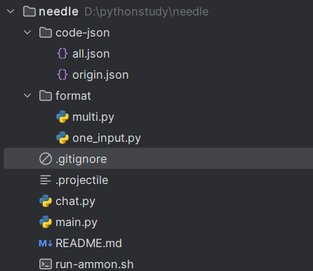

前言
毕业设计的一部分，我来看看，有一说一，这个项目并不复杂
一句话描述：python项目，接收json格式的批量代码数据，调用ammon进行多种类型错误生成，输出json文件
项目结构

code-json包
两个json文件，分别是origin.json和all.json，用于进行错误代码生成
存储的都是leetcode题目，格式如下
整体来说是一个大的字典，作为mute函数的输入：one
[
{
"id": 1,
"description": [
//题目描述
],
"tag": [
//题目标签
],
"answer": [
//C++题解，包含多种解法，我草
]
}
]理性讨论没发现什么区别，其实就是origin里的代码比all里的代码多罢了
origin.json
猜测是一开始爬的小部分题目，只有28题
all.json
全量题目，有200题，最开始几题可以和leetcode上对应，后面就随机了
format包
包含multi.py以及one_input.py，目测是定义了生成对话的逻辑规则
one_input.py
定义了transform方法，目的是将一个 one 中的每一对正确答案和错误变异组合起来, 按照一定格式生成生成对话
transform：该方法接收一个字典 one，并生成一个对话列表。以下是具体解析：
def transform(self, one) -> list:
"""
将一个 one 中的每一对正确答案和错误变异组合起来, 按照一定格式生成生成对话
"""
result = []//初始化返回结果列表
description = one["description"]//英文的题目描述
fmain = "int main() {}"//代码的开头,int main(){}
for answer, errors in zip(one["answer"], one["error"])://遍历answer和error，每一个正确代码可能有多个错误代码对应
for error in errors:
error_code = error["code"]//错误代码具体
row, col = error["pos"]//错误位置
error_desc = error["desc"]//错误类型
# 注意有给 leetcode 加的保险
//这里的conversation相当于我一次对话，input为输入，output为gpt的结果
conversation = {
"instruction": f"Given a problem description, incorrect code, the location of the error within the code, and a description of what's wrong, I need you to identify the mistake and provide the corrected code. Problem Description:\n{description}",
"input": f"Erroneous Code:\n{error_code}\n{fmain}\n\nError Location (row, column):\n({row}, {col})\n\nError Description:\n{error_desc}",
"output": f"{answer}\n{fmain}",
}
result.append(conversation)
return resultone
一个字典，包含键 "description"、"answer" 和 "error"。"description" 是问题描述，"answer" 是正确答案的列表，"error" 是错误的代码及其相关信息的列表。
格式如下：
one = {
"description": "问题描述内容",
"answer": [
"正确答案1",
"正确答案2",
# 其他正确答案
],
"error": [
[
{
"code": "错误代码1",
"pos": (行号1, 列号1),
"desc": "错误描述1"
},
{
"code": "错误代码2",
"pos": (行号2, 列号2),
"desc": "错误描述2"
}
# 其他错误信息
],
[
{
"code": "错误代码3",
"pos": (行号3, 列号3),
"desc": "错误描述3"
}
# 其他错误信息
]
# 其他错误列表
]
}例子：
one = {
"description": "计算两个数的和。",
"answer": [
"int main() { return a + b; }"
],
"error": [
[
{
"code": "int main() { return a - b; }",
"pos": (1, 20),
"desc": "使用了错误的运算符"
}
]
]
}问题
answer字段包含多种解法，目前不确定error字段的code部分，如何定位到对应的解法，是每一种解法只有一个对应错误代码，还是多个错误代码
更新：应该是多个错误代码
更新：”code”应该只有错误的那一行代码，而不是整个错误的代码
conversation
定义了和模型对话的格式
conversation = {
"instruction": f"Given a problem description, incorrect code, the location of the error within the code, and a description of what's wrong, I need you to identify the mistake and provide the corrected code. Problem Description:\n{description}",
"input": f"Erroneous Code:\n{error_code}\n{fmain}\n\nError Location (row, column):\n({row}, {col})\n\nError Description:\n{error_desc}",
"output": f"{answer}\n{fmain}",
}multi.py
one_input生成的conversation只是用户给gpt单向的，而multi返回的conversation有双向的，包含了gpt的回答格式
conversation
这里的conversation是一个字典格式，包含id和conversations两个部分，id为字符串，conversations为列表
整体而言格式如下：
{
"id": "conv_id-1-1",
"conversations": [
{
"from": "human",
"value": "Could you provide a C++ program template with a class named 'Solution' and a 'main' function? The problem it should address is described as follows:\n问题描述.\nPlease ensure to include the directive '#include <bits/stdc++.h>' and 'using namespace std;'."
},
{
"from": "gpt",
"value": "Sure, here is a cpp program for this problem:\n错误代码\nint main() {}"
},
{
"from": "human",
"value": "There is a bug in 5:10, bug description is '某某错误', please fix it."
},
{
"from": "gpt",
"value": "Sorry, here is the fixed code:\n修复后的正确代码\nint main() {}"
}
]
}
id
由三个部分组成：f"{conv_id}-{idx + 1}-{sub_idx + 1}"。
conv_id: 来自 one["id"]，通常表示问题或任务的编号。
idx + 1: 当前循环中的正确答案的编号。
sub_idx + 1: 当前循环中的错误代码的编号。
conversations
包含四次发言，人类和gpt各两次
- 第一段对话 (
from: "human"):- 发言内容请求 GPT 提供一个 C++ 程序模板，包含一个名为
Solution的类和main函数。 - 模板的作用是解决问题
description中描述的任务。 - 还要求包含
#include <bits/stdc++.h>和using namespace std;这些标准的 C++ 导入语句。
- 发言内容请求 GPT 提供一个 C++ 程序模板，包含一个名为
{
"from": "human",
"value": f"Could you provide a C++ program template with a class named 'Solution' and a 'main' function? The problem it should address is described as follows:\n{description}.\nPlease ensure to include the directive '#include <bits/stdc++.h>' and 'using namespace std;'."
}
- 第二段对话 (
from: "gpt"):- GPT 提供了一段包含错误的 C++ 代码，代码内容是
error_code，并包含fmain，即int main() {}这段代码作为函数定义。 - 也就是说这里GPT一开始提供的是错误代码
- GPT 提供了一段包含错误的 C++ 代码，代码内容是
{
"from": "gpt",
"value": f"Sure, here is a cpp program for this problem:\n{error_code}\n{fmain}"
}
- 第三段对话 (
from: "human"):- 人类发言指出代码中的某个错误，位置在
row和col，并提供了错误的描述error_desc，请求 GPT 修复错误。
- 人类发言指出代码中的某个错误，位置在
{
"from": "human",
"value": f"There is a bug in {row}:{col}, bug description is '{error_desc}', please fix it."
}
- 第四段对话 (
from: "gpt"):- GPT 提供修正后的代码，内容为
answer，并再次包含fmain。
- GPT 提供修正后的代码，内容为
{
"from": "gpt",
"value": f"Sorry, here is the fixed code:\n{answer}\n{fmain}"
}
总结
所以总体来说one_input和multi区别不大，都是生成对话
但是one_input生成一次性，multi生成来回对话，并且添加上了idx
run-ammon.sh
执行ammon的脚本
内容如下：
# shell解释器的路径
#!/usr/bin/env bash
# ammon 可执行文件的路径
AMMON=/home/xiayi/Mine/workspace/mand/code-fix/ammon/build/ammon
$AMMON "$@" --
"$@" 会传递所有命令行参数到 ammon 程序。 "$@" 是所有传入参数的集合，保证所有输入参数都直接传递给 ammon。
chat.py
主要用于测试和gpt的链接是否正常，仅仅发送一条”Hello”消息
直接看代码
#!/usr/bin/env python //制定python解释器的位置
import os
import requests
OPENAI_API_KEY = os.getenv('OPENAI_API_KEY')//从环境变量中获取 OpenAI API 密钥
headers = {
'Content-Type': 'application/json', //内容格式
'Authorization': f"Bearer {OPENAI_API_KEY}",//认证信息
}
# 具体请求数据，模型3.5，内容为一个Hello
json_data = {
'model': 'gpt-3.5-turbo',
'messages': [
{
'role': 'user',
'content': 'Hello!',
},
],
}
# 发送请求并返回响应
if __name__ == "__main__":
response = requests.post('https://api.openai-proxy.com/v1/chat/completions', headers=headers, json=json_data)
print(response.content)
main.py
这个脚本 main.py 用于处理 JSON 数据，生成一系列 “变异体”（mutation），并将结果保存为 JSON 文件。
包含多个部分：
**日志配置 (logger_config)**：
- 设置日志记录功能，日志会输出到终端和文件中，便于调试和错误跟踪。
**变异检查 (check_valid)**：
- 使用
clang++编译代码片段，检查语法是否正确。如果有语法错误，返回False。
**代码变异 (mutate)**：
- 主要逻辑是对
one["answer"]中的每个代码段进行变异操作。 - 使用
run-ammon.sh脚本和有效的变异类型集合valid_mutation对代码段生成变异体。 - 使用
clang-format格式化代码，确保生成的变异代码符合风格。
**整体流程控制 (all)**：
- 对所有 JSON 数据元素应用变异操作。
- 调用
mutate函数处理每个问题中的答案代码段，并生成相应的变异体。 - 根据
transform函数格式化结果，生成对话格式数据，并写入文件res.json。
主函数逻辑：
- 检查命令行参数个数，正确则运行
logger_config设置日志记录。 - 调用
all函数对 JSON 文件中每个元素进行变异操作。
配置信息
对日志、函数等信息进行配置
logger = logging.getLogger(__file__)# 创建了一个以当前文件路径为标识的日志记录器
mutate_exec = os.path.join(os.getcwd(), "run-ammon.sh")# 形成run-ammon.sh的完整路径
valid_mutation = {0, 1, 3, 4, 5}# 有效变异类型组合
clang_style = "{BasedOnStyle: llvm, MaxEmptyLinesToKeep: 1, KeepEmptyLinesAtTheStartOfBlocks: false}"# 定义clang-format格式
format_funcs = {"multi": Multi().transform, "one-input": OneInput().transform}# 格式化函数映射clang-format：Clang-Format可用于格式化（排版）多种不同语言的代码。其自带的排版格式主要有：LLVM, Google, Chromium, Mozilla, WebKit等
格式化函数映射： 也就是说，我输入multi，就会调用multi.transform
日志配置logger_config
这个没啥好说的，就是配置日志
def logger_config(log_file_name: str):
logger.setLevel(logging.DEBUG)# debug级别，最详细
# file handler
fh = logging.FileHandler(log_file_name, mode="w")# filehandler会将日志写入制定文件
fh.setLevel(logging.DEBUG)
# cmd handler
ch = logging.StreamHandler()# cmdhandler则输出到控制台
ch.setLevel(logging.INFO)# 级别为info，不如debug详细
# format
formatter = logging.Formatter(# 日志格式
"Log[%(asctime)s:%(funcName)s:%(lineno)d] - %(levelname)s: %(message)s"
)
ch.setFormatter(formatter)# 将格式给到handler
fh.setFormatter(formatter)
logger.addHandler(ch)# handler绑定给logger，就可以用了
logger.addHandler(fh)变异检查check_valid
对变异后的代码使用clang++进行编译，用于检查是否有语法错误
总体代码
def check_valid(result):
"""
使用 clang++ 编译 'mutated' 中的代码, 根据需要检查语法错误
如果语法正确或者不需要检查，返回 True; 否则返回 False
"""
if len(result) < 5:
return False
mutated = "\n".join(result[3:-1])
desc = result[2]
if mutated == "":
return False
if "syntax" in desc:
return True
with tempfile.NamedTemporaryFile(delete=False, suffix=".cpp") as tmp_file:
# 将代码写入临时文件
tmp_file.write(mutated.encode("utf-8"))
# 获取临时文件的文件名
tmp_filename = tmp_file.name
# 构建 clang++ 命令来编译这个源文件
compile_command = [
"clang++",
tmp_filename,
"-c",
"-o",
"/dev/null",
"-fsyntax-only",
]
# 执行编译命令
result = sp.run(compile_command, stdout=sp.PIPE, stderr=sp.PIPE, text=True)
# 删除临时文件
os.remove(tmp_filename)
# 如果编译成功 (无语法错误), 返回 True
return result.returncode == 0一段一段来看
前置验证：
if len(result) < 5:
return False
mutated = "\n".join(result[3:-1])
desc = result[2]
if mutated == "":
return False
if "syntax" in desc:
return True
result 是由变异生成的代码行组成的列表
result 的长度若小于 5，则认为结果无效并返回 False
mutated 是变异后的代码部分，合并 result 的 3 到 -1 行
desc 是变异的描述信息
若 mutated 为空或 desc 中包含 "syntax" 字样，则认为无需进一步验证，直接返回 True。因为已经明确表明了当前的代码片段是与语法相关的错误
使用clang++编译
with tempfile.NamedTemporaryFile(delete=False, suffix=".cpp") as tmp_file:
# 将代码写入临时文件，以cpp为后缀
tmp_file.write(mutated.encode("utf-8"))
# 获取临时文件的文件名
tmp_filename = tmp_file.name
# 构建 clang++ 命令来编译这个源文件
compile_command = [
"clang++",# 指定clang++
tmp_filename,# 文件
"-c",# 只编译
"-o",# 不生成可连接文件
"/dev/null",
"-fsyntax-only",# 只进行语法检查，不实际编译
]
# 执行编译命令
result = sp.run(compile_command, stdout=sp.PIPE, stderr=sp.PIPE, text=True)# sp为subprocess，开启子进程处理
# 删除临时文件
os.remove(tmp_filename)
# 如果编译成功 (无语法错误), 返回 True
return result.returncode == 0代码变异
对origin.json或者all.json调用ammon进行批量代码变异，穿插check_valid函数进行验证
此处的输入one的格式，就是origin.json的格式，或者说内容就是origin.json
结果是err，其实对应的就是之前解析的one
整体代码
def mutate(one: dict):
problem_id = one["id"]
logger.info("Mutation start for problem {}".format(problem_id))
errs = []
codes = one["answer"]
answer_to_remove = []
for idx, code in enumerate(codes):
logger.info("Mutating code {}-{}".format(problem_id, idx + 1))
with tempfile.NamedTemporaryFile(mode="w+t", delete=True, suffix=".cpp") as f:
# write code into tempfile
# append header file and namespace statements
f.write("#include <bits/stdc++.h>\n")
f.write("using namespace std;\n")
f.write(code)
f.write("\n")
f.flush()
# clang-format
s = sp.run(
[
"clang-format",
"-i",
"-style=" + clang_style,
f.name,
],
stdout=sp.DEVNULL,
stderr=sp.PIPE,
)
if s.returncode != 0:
logger.error("Format error: {}".format(s.stderr))
exit(1)
# do mutatation
cmd = [mutate_exec, f.name, "-t"]
# 遍历所有可以使用的 mutation
answer_mutated = []
for t in valid_mutation:
cur_cmd = cmd + [str(t)]
count = 0
# 重复某一个 mutation 最多三次, 排除偶然因素
while True:
count += 1
logger.info(
"Executing '{}' for the {}-th time".format(
" ".join(cur_cmd), count
)
)
result = sp.check_output(cur_cmd, text=True).splitlines()
if check_valid(result):
info = result[1].split(" ")
pos = info[:2]
desc = result[2]
mutated = "\n".join(result[3:-1])
answer_mutated.append(
{"pos": pos, "code": mutated, "desc": desc}
)
break
logger.debug(
"Mutation error:\nammon result:\n{}\ncode:\n{}".format(
result, code
)
)
# 最多重复 3 次
if count >= 3:
break
# 如果当前 answer 一个 err 都没生成
if len(answer_mutated) == 0:
answer_to_remove.append(idx)
else:
errs.append(answer_mutated)
# 删除掉没有成功生成对应变异体的 answer
for idx in sorted(answer_to_remove, reverse=True):
int_idx = int(str(idx))
logger.info("Removing invalid answer {}-{}".format(problem_id, int_idx + 1))
codes.pop(idx)
# append attribute error
one["error"] = errs逐步解析:
获取问题 ID 和初始化变量
problem_id = one["id"]# 问题id，并不完全和lc的id一样
logger.info("Mutation start for problem {}".format(problem_id))
errs = []
codes = one["answer"]# 每个问题有多个正确答案
answer_to_remove = []遍历每段代码进行变异
for idx, code in enumerate(codes):
logger.info("Mutating code {}-{}".format(problem_id, idx + 1))
# 遍历codes中的代码，同时记录idx创建临时文件并写入代码
with tempfile.NamedTemporaryFile(mode="w+t", delete=True, suffix=".cpp") as f:
f.write("#include <bits/stdc++.h>\n")
f.write("using namespace std;\n")
f.write(code)
f.write("\n")
f.flush()格式化代码
s = sp.run(
[
"clang-format",
"-i",# 就地修改
"-style=" + clang_style,
f.name,
],
stdout=sp.DEVNULL,# 标准输出定位到null，相当于不要了
stderr=sp.PIPE,# 只捕捉错误信息到管道
)设置变异命令
# do mutatation
cmd = [mutate_exec, f.name, "-t"]构造命令以调用 run-ammon.sh 脚本，后面将为其添加变异类型参数
变异并调用check_valid验证
# 遍历所有可以使用的 mutation
answer_mutated = []
for t in valid_mutation:# 目前是{0, 1, 3, 4, 5}
cur_cmd = cmd + [str(t)]
count = 0
# 重复某一个 mutation 最多三次, 排除偶然因素
while True:
count += 1
logger.info(
"Executing '{}' for the {}-th time".format(
" ".join(cur_cmd), count
)
)
result = sp.check_output(cur_cmd, text=True).splitlines()# 执行cmd并结果按行分割成字符串列表
if check_valid(result):
info = result[1].split(" ")
pos = info[:2]
desc = result[2]
mutated = "\n".join(result[3:-1])
answer_mutated.append(
{"pos": pos, "code": mutated, "desc": desc}
)
break
logger.debug(
"Mutation error:\nammon result:\n{}\ncode:\n{}".format(
result, code
)
)
# 最多重复 3 次
if count >= 3:
break注：此处result格式疑似为:
result = [
"Mutation successful", # 变异状态
"Position: line 4, column 10", # 变异位置
"Description: syntax mutation", # 变异描述
"int x = 10;", # 变异后的代码
"x += 5;" # 变异后的代码（可能还有更多行）
]根据代码来看，同一个code会进行所有错误类型的生成，但是每次生成只对应一个错误类型，同一个错误类型会尝试至多3次，不成功便跳过该错误类型
处理无效答案
if len(answer_mutated) == 0:
answer_to_remove.append(idx)
else:
errs.append(answer_mutated)如果当前代码没有生成有效的变异体，记录索引以便后续移除；否则，将有效的变异体添加到 errs 中。
移除无效答案并记录errs
# 删除掉没有成功生成对应变异体的 answer
for idx in sorted(answer_to_remove, reverse=True):
int_idx = int(str(idx))
logger.info("Removing invalid answer {}-{}".format(problem_id, int_idx + 1))
codes.pop(idx)
# append attribute error
one["error"] = errs整体流程控制all
all 函数负责执行项目的整体流程，将 JSON 文件加载为数据，逐个进行变异操作并将变异结果保存
def all(json_file_name: str, json_dir_name: str, transform):
logger.info("Link start for {}".format(json_file_name))
intermediate_file_name = os.path.join(json_dir_name, "mid.json")# 存储中间结果
result_file_name = os.path.join(json_dir_name, "res.json")# 存储最终结果
with open(json_file_name, "r") as f:
# list type
data = json.load(f)# 加载json文件
one_to_remove = []
# mutate each element
for idx, one in enumerate(data):
mutate(one)
# 说明一个变异体都没成功生成
if len(one["answer"]) == 0:
one_to_remove.append(idx)
# 在 data 中删除无效的 one
for idx in sorted(one_to_remove, reverse=True):
logger.info("Removing invalid problem {}".format(data[idx]["id"]))
data.pop(idx)
# conversations
convs = []
# transform into conversation，具体可以为one或者multi
for one in data:
convs.extend(transform(one))
# write intermediate result into mid.json，变异的中间结果作为mid.json
with open(intermediate_file_name, "w") as r:
json.dump(data, r, indent=4)
# write final result into res.json ，最后的对话作为res.json
with open(result_file_name, "w") as r:
json.dump(convs, r, indent=4)main函数
main 函数控制整个脚本的运行逻辑，设置了日志配置，并根据命令行参数执行主流程
if __name__ == "__main__":
if len(sys.argv) != 3:
exit(1)
json_file_name = sys.argv[1]# 文件名，如origin.json
json_dir_name = os.path.dirname(json_file_name)# 文件夹路径
logger_config(os.path.join(json_dir_name, "all.log"))
conv_format = sys.argv[2]# 对话格式,one/multi
all(json_file_name, json_dir_name, format_funcs[conv_format])# 通过all来执行全部流程对应格式：
python main.py data.json multi